Camila Castagna Nutritionist
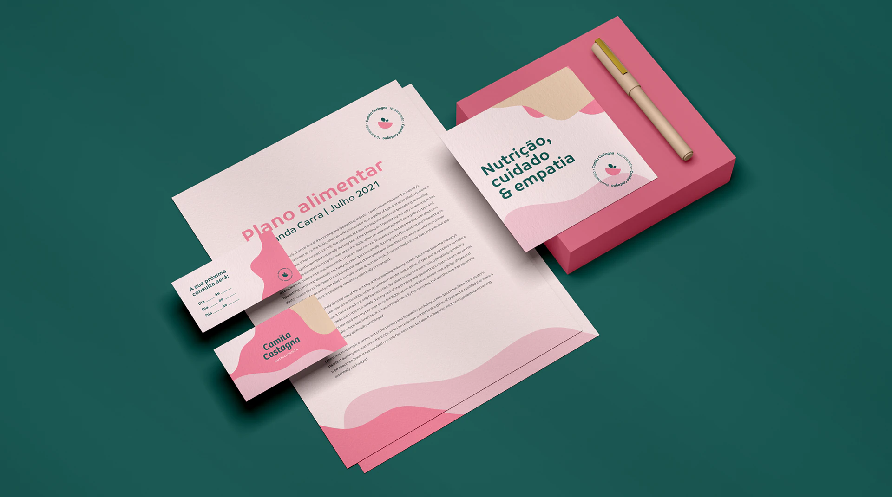
- Client
- Camila Castagna Nutritionist
- Year
- 2022
- Project
- Brand Design
Camila Castagna Nutritionist
Camila Castagna is a Brazilian nutritionist who focuses on behavioral and functional nutrition.
Goals with the project:
– Represent the attributes: friendly, outgoing, cozy, delicate, organic and accessible
– Avoid the obvious: no apples and measuring tapes. They are very clichéd elements of the area.
– Flexibility: for application on canvas, word, print, and online.
– Communicate with the public: young women looking to lose weight.
– Harmonize with the clinic.
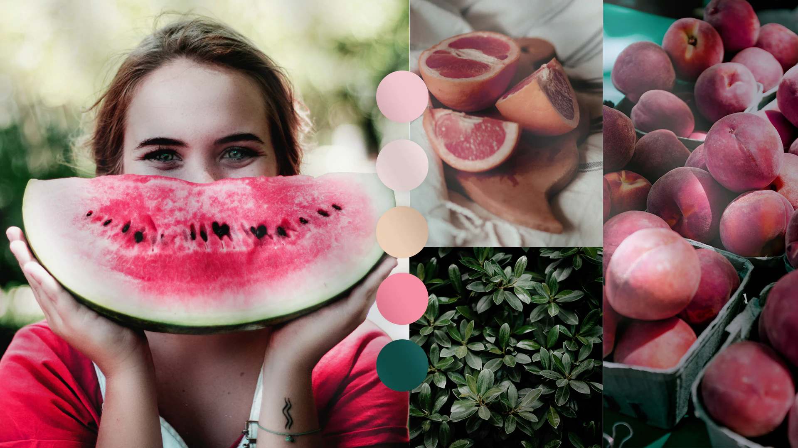
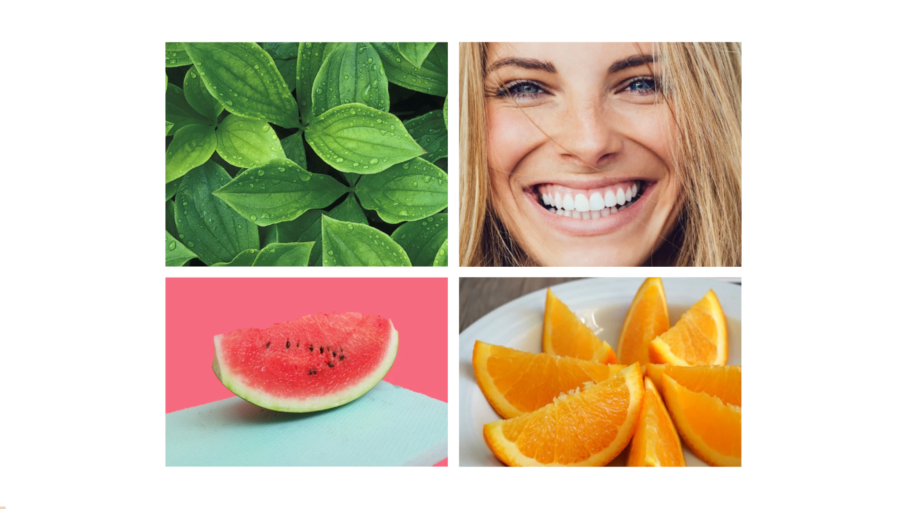
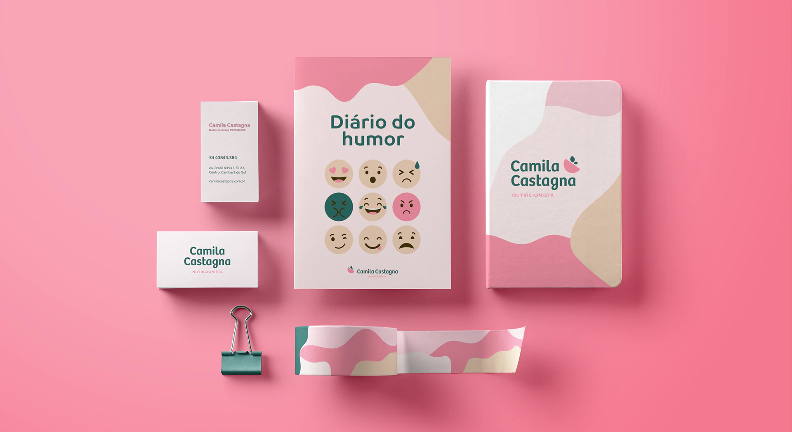
The symbol
The nutrition process is one of the most important factors in keeping the body’s functions up to date at all stages of our lives. Taking these factors into account to convey the essence of the brand, the leaf that is directly linked to the tree was chosen as symbolism and represents life, cycle, change and growth. The smile of satisfaction and joy due to high self-esteem, well-being, health and quality of life due to nutrition is inherent to the patient. As well as a fruit, essential for our body’s nutrition were also represented. Everything in a light, fun, organic and happy way.
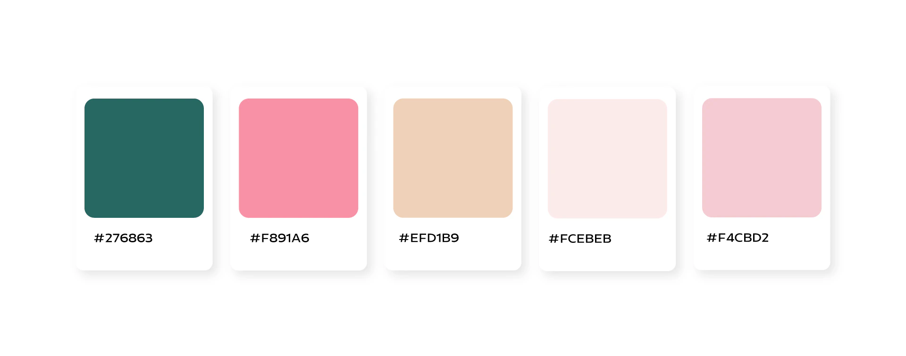
The chosen colors add a cheerful, extroverted, light and cozy atmosphere that connects directly with the target audience. The shades of pink bring delicacy, femininity and warmth to the brand, in addition to harmonizing with the furniture. Dark green, on the other hand, promotes the feeling of being healthy, organic, sober and confident. Despite being green, this tone is different from other players in the market. The beige tone brings warmth and makes the combination of colors even more harmonious and pleasant.
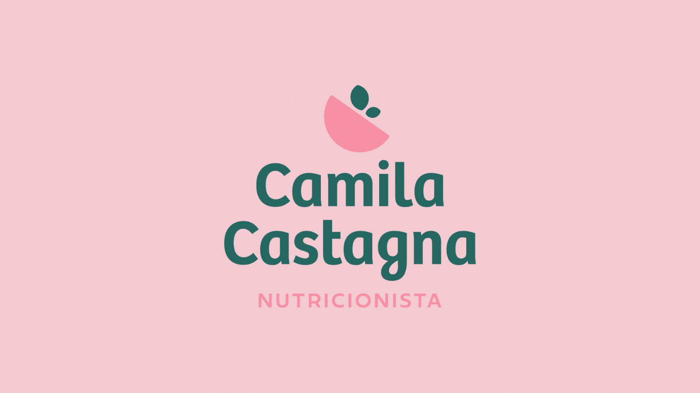
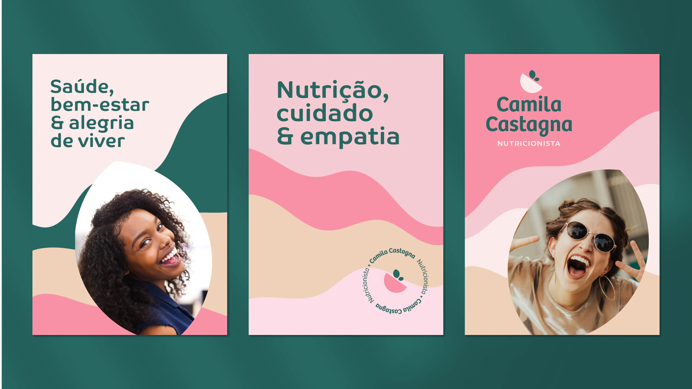

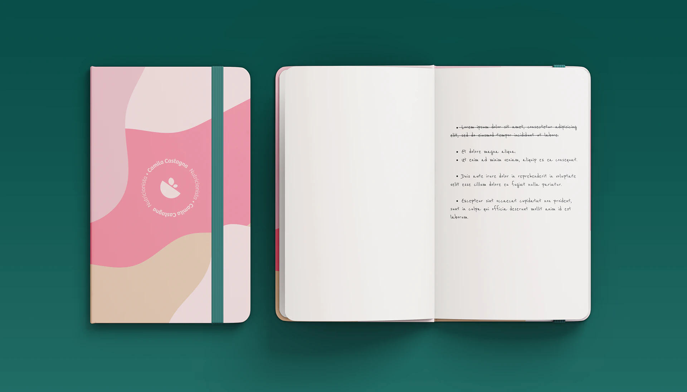
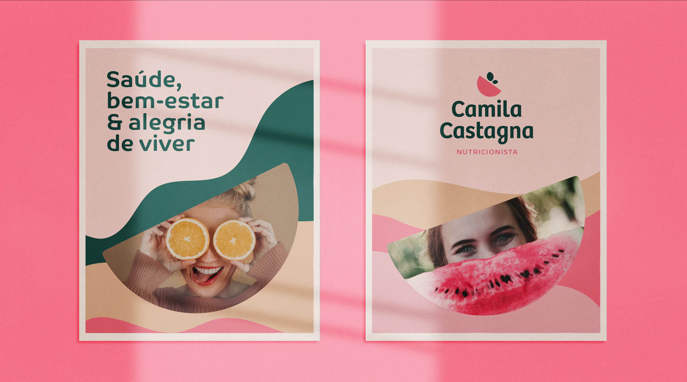
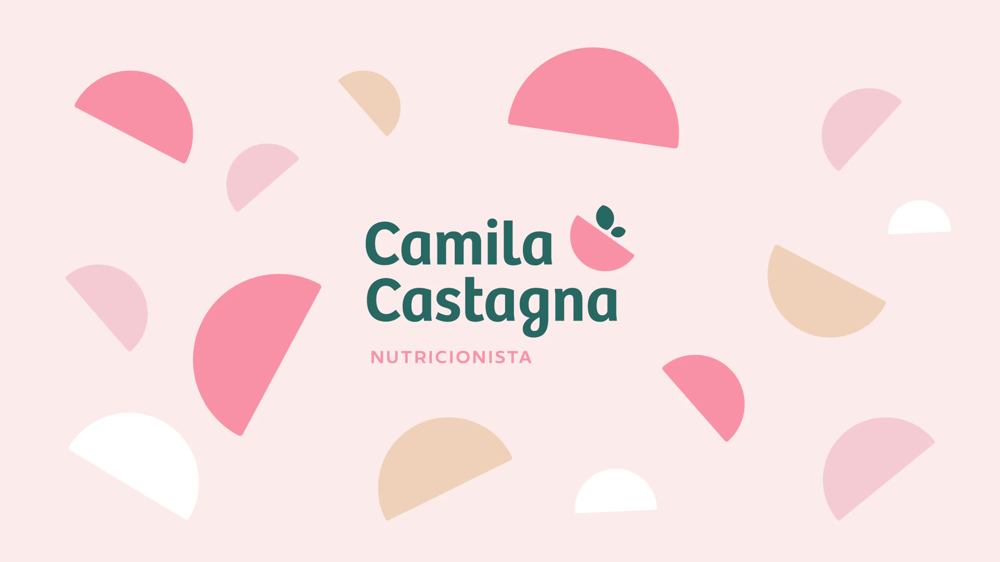
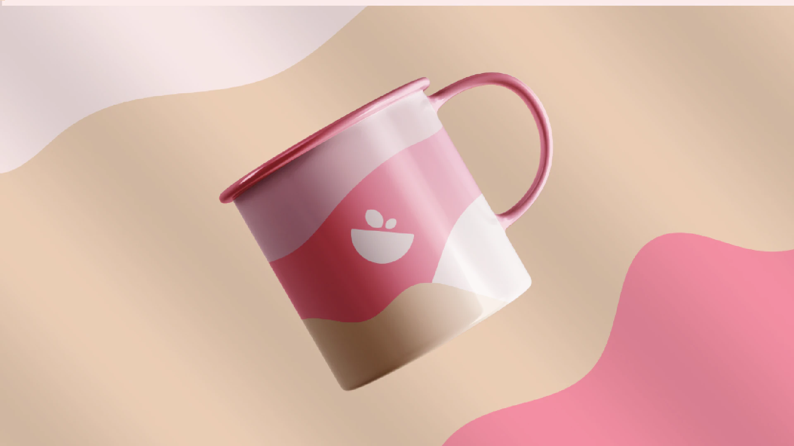
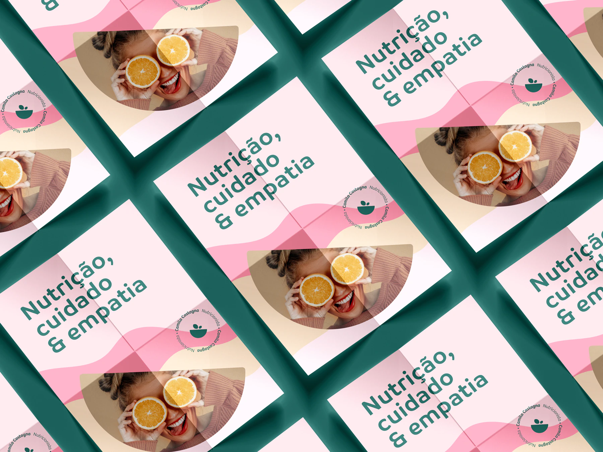